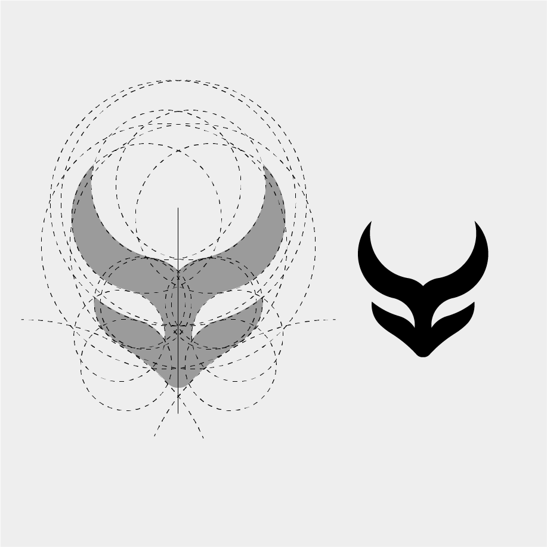
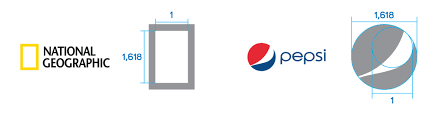
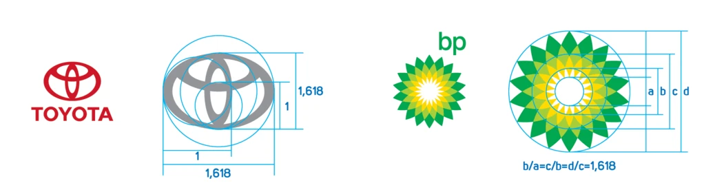

GOLDEN RATIO IN LOGO DESIGNING
Art and design is infamously subjective. One person’s trash can be another’s masterpiece. But luckily there is an age-old number that can help aid your designs into scientifically-proven beauty: the Golden Ratio. Although art and design are often led by instinct and creativity, the Golden Ratio uses mathematics to transform your image-making, layout, typography and much more. So let’s get into it.

• One of the best things about the Golden Ratio is that it gives you a simple number to help structure the otherwise expressive nature of design. Simply multiply an element’s size by 1.618 to figure out the size of another element, or overlay the Golden Spiral to adjust their placement. You can use the Golden Ratio to guide you in your layouts, typography, imagery and more.
Designing the logo using the golden ratio is one of the most important receptions in the present. Sometimes this great privilege was enjoyed only by large and well-known brands. And today, many designers have mastered this technique and small firms can come up with a golden ratio logo design. In the pictures I have identified some famous brands that have a golden ratio logo.
The National Geographic logo uses a yellow frame with internal spaces in the golden ratio of 1: 1,61. Pepsi, on the other hand, uses the ratio of circles whose diameter is in golden ratio. One circle borders the edge of the logo, and the second circle forms a curve on the blue part of the logo. These are two simple applications of golden ratio. In the following example, somewhat more complex versions are used.

The Toyota logo is drawn from three ellipses. The one in the image that makes the logo frame and the two small ones in the middle overlap, making an abstract letter T. In the figure with the circles it is shown how the golden ratio is used. The ratio between upper and lower edges is 1: 1.61. Also, the cross-section is also in the same relationship. In other side, on each side we encounter a golden ratio. BP logo uses some rays or symbolizes the sun in four colors. White, yellow, green and dark green. The size of these rays is in the golden ratio circle. The circles were used where we start from the smallest each followed by 1.61 higher.

The most complex form of logo in golden ratio with Twitter and Apple logo. With these logos, each piece is drawn in a golden ratio. Apple logo is already a simple and popular logo, but who would say that it is so complexly drawn. The scapular curvature uses a certain circle size from the golden ratio of circles. With the Twitter logo, everything is done the same way.
For example, Green in Blue’s logo for baking business ‘The Hungry Gnome’ is a perfectly balanced contemporary-kitsch logo that uses the Golden Ratio to guide image placement, and the sizing of its text.Rahajoe’s logo for Little Spoon uses circles within the Golden Ratio as a grid to guide their design. When designing a logo, you can even imagine the Fibonacci sequence as a series of circles, then rearrange them to form a grid as the foundation for your logo design. This is the basis of many logos, including the Twitter bird.A well-conceived logo is vital to your brand so people can understand your core message at almost a single glance. That’s why it’s a great idea to consider the Golden Ratio when designing a logo to instantly draw people in and help them connect.